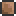
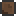
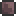

Dirt Block
| Dirt Block | |
|---|---|
|  | |
| Statistics | |
| Type | Block Crafting material |
| Max stack | 250 |
| Use time | 14 |
Dirt blocks are one of the most fragile blocks in the game. A single hit from most Pickaxes will successfully mine them, but dirt blocks with any kind of grass on them may take two hits.
As natural caverns close to the surface are made of dirt, NPCs won't accept a house made with naturally occurring dirt walls. The background walls must be crafted and placed by the player to be considered safe for habitation. Player placed dirt walls have different data values than the generated dirt wall, but still merge with the natural dirt wall.
After the Wall of Flesh has been defeated on a world, corruption and hallow will spread through Mud Blocks. When it does, it "dries" them, converting them automatically to Dirt Blocks. As a result, mud may become more rare in worlds that have entered hardmode. Players can "moisten" dirt once again to produce mud, if needed.
Crafting
Used in
| Result | Ingredients | Crafting Station | |
|---|---|---|---|
|  | Dirt Wall(4) | Dirt Block(1) | |
|  | Mud Block | Dirt Block(1) | Water |
History
- 1.1: Can now be used to craft Mud Blocks, when near water.
- 1.0.4: Now blends graphically with mud.
- Pre-Release: Introduced.